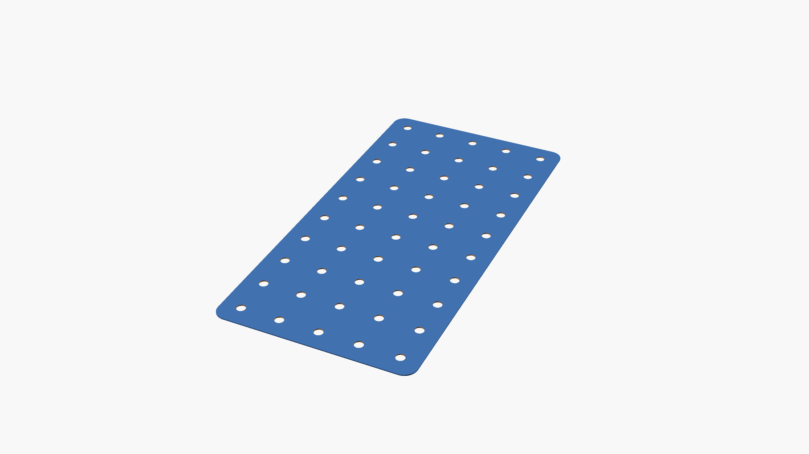
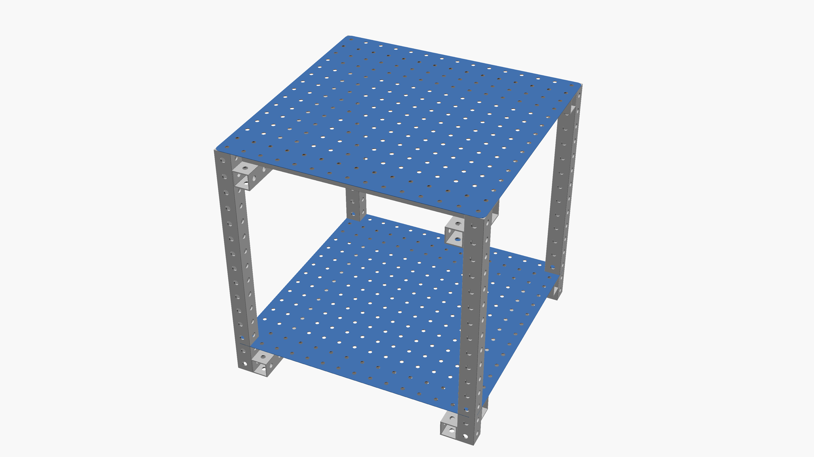

main page revision 3115
__NOTOC__


Replimat is a building system which is broadly interoperable and self-replicating. It is made of a small number of parts reused in many different ways to enable building many things most people need including several of the tools necessary to make more parts from raw materials.
Many parts can simply be cut to form two smaller parts without waste. All Replimat components are designed for disassembly, and cradle-to-cradle reusability and constructed wherever possible from waste or other durable, reusable, renewable, recycled and recyclable materials. Replimat components form a durable, repurposable, mult-use carbon sink for the waste streams of other processes. Component parts which cannot yet be replicated are known as vitamins and development to improve replication of the entire system is hosted in this wiki.
Self reproduction lowers cost, decentralizes production, localizes supply and demand, enables innovation, shortens supply lines, reduces inventory and storage requirements, and encourages the reproduction and spread of knowledge and empowerment.
Replimat is Open Source Hardware and an example of the Open Design Movement. The Replimat project follows a community code of conduct.
Reasons to use Replimat
- [Dis]assemble fast!
- Minimize head and hand tooling
- Non-destructive - cradle to cradle, designed for disassembly and reuse
- Standardized components drastically reduce inventory, manufacturing requirements
- Avoid unnecessary material transformations - when possible use unmodified goods
- Interoperate with modular construction systems
Design goals
- The '''right way''' is the '''easiest to copy'''.
- Design parts against the replimat grid to reduce complexity and increase modularity and reusability
- favor parts which can be locally reproduced and have wide application
- enable local production via locally made machines
- consume waste materials for use as raw materials wherever possible - trash to treasure
- promote pools of compatible parts, within which innovation can happen as fast as communication
- strive toward openness and wide application of all components, production processes, firmwares and software
Parts
These parts recombine in millions of ways to build every Replimat project. The small number of unique parts reduces complexity of reproduction.\\
Structure parts
 Frames" loading="lazy">
Frames" loading="lazy">
 Nuts" loading="lazy">
Nuts" loading="lazy">
 Bolts" loading="lazy">
Bolts" loading="lazy">
 Washers" loading="lazy">
Washers" loading="lazy">

Plates" loading="lazy">Motion parts
 Linear bearings" loading="lazy">
Linear bearings" loading="lazy">
 Bicycle bottom brackets" loading="lazy">
Bicycle bottom brackets" loading="lazy">
Axial bearings, Thrust bearings, Axles, Casters, Wheels, Springs, Gears and Sprockets\\
Electric parts
 Electrical connectors" loading="lazy">
Electrical connectors" loading="lazy">
Wires, Motors, Solar panels, Batteries, Controllers\\
Fluid parts
 Barrels" loading="lazy">
Barrels" loading="lazy">
Hoses, Clamps, Couplers, Fluid pumps, Exchangers\\
Hydraulic parts
Hydraulic hoses, Hydraulic couplers, Hydraulic pumps, Hydraulic valves, Hydraulic motors, Hydraulic pistons
Pneumatic parts
Air cylinders, Pneumatic grippers
Techniques
 Tri joints" loading="lazy">
Tri joints" loading="lazy">
 Shelf joints" loading="lazy">
Shelf joints" loading="lazy">
 Barrel cages" loading="lazy">
Barrel cages" loading="lazy">
Fasten loosely until assembled\\
Trusses\\
Projects
Projects are made from Parts. Each new project increases Replimat's utility for everyone.
Tools
 Wrenches" loading="lazy">
Wrenches" loading="lazy">
Lights\\
Spades\\
Pallets\\
Crates\\
Ladders\\
Furniture
 Shelves" loading="lazy">
Shelves" loading="lazy">

Tables" loading="lazy">Desks\\
Bins\\
Beds\\
Chairs\\
Couches\\
Assistive devices
Energy
Motors\\
Fans\\
Transportation
Trucks\\
Scooters\\
Boats\\
Kayaks\\
Health
Shelter
Information
Cameras\\
Phones\\
Agriculture
Carts\\
Kitchens\\
Tractors\\
Manufacturing
Kilns\\
Planers (Thicknessers)\\
Recycling
Textiles
Ways to help
- Join the mailing list
- To edit the wiki: register an account
- Upload a photo
- Create a page for your project
- Install the Replimat software.
- Acquire vitamins for the project.
- Purchase parts from the Replimat store
- Sign up for build days.